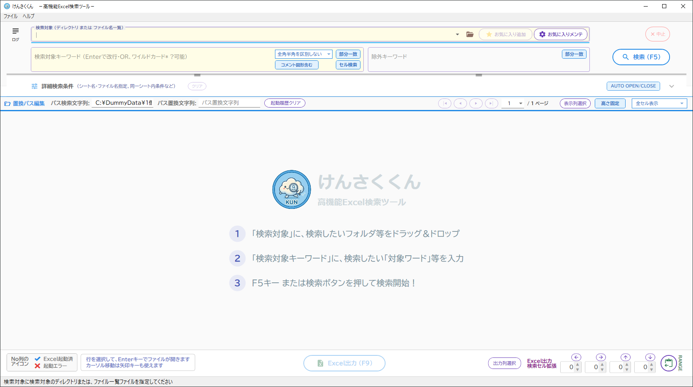
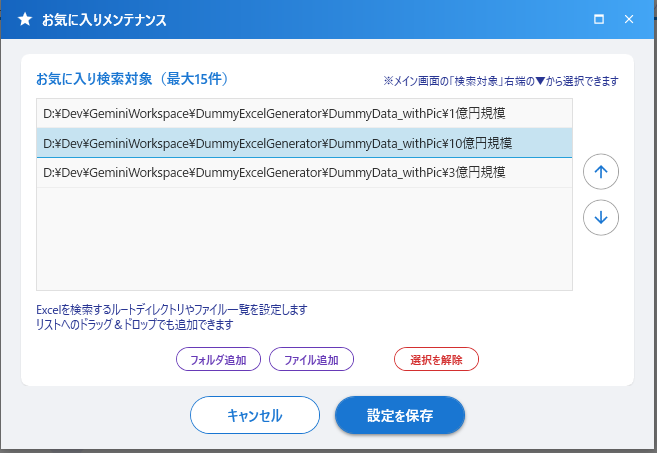
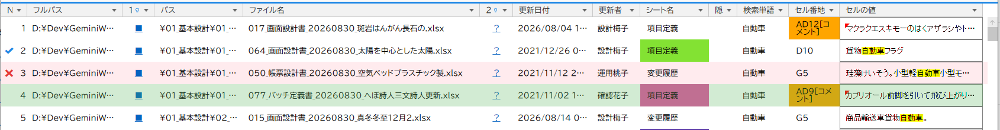
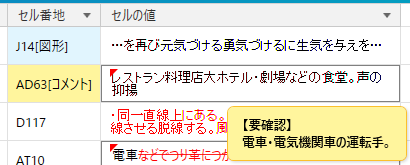
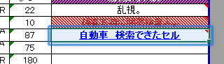

【重要】利用上の注意事項
・本ソフトウェアはWindows 10/11で動作します。
・SharePoint等のクラウド上のファイルは、ローカルに同期されたフォルダを指定するか、ネットワークドライブとして扱える状態にする必要があります。
・本ツールは検索高速化のためメモリとCPUを活用します。数万行に及ぶ巨大なデータベース表Excelの検索には向いていません。
・本ソフトウェアはシェアウェアとして公開します。初回30日間は全機能を無料でお試しいただけます（継続利用にはライセンス登録が必要です）。
1. Excel横断調査・レビュー支援ツール
「けんさくくん」は、大量のExcel資産から素早く簡単に目的のデータを探し出すためのWindows専用デスクトップツールです。特に「Excel方眼紙」の横断調査やレビューに向けて設計されています。
主な特徴
- 高速な検索：検索前にExcelファイルの解析とロードを行うことで、数百のExcelファイルに対しても検索条件を変えた高速な検索を実現します。
- 多彩な検索条件：セルの値だけでなく、シート名やブック名、コメントや図形内のテキストなども検索・除外の対象にできます。
- 柔軟なキーワード指定：改行による複数キーワードのOR検索や、ワイルドカード（* / ?）を用いたあいまい検索に対応しています。
- 使いやすいUI：ドラッグ＆ドロップでのフォルダ・ファイル指定や、結果一覧から直接ファイルを開く機能など、ファイルを探すことに特化しています。
- 検索結果の整理：結果をExcelへダウンロードできます。検索したセルや周辺の書式も可能な限り再現し、取消線もチェックできる業務目線の設計です。
【動画】基本的な使い方
フォルダ構成と同梱ファイル
zipファイルを展開すると、以下のファイル構成となります。インストーラー不要で、Kensaku-kun.exe を実行するだけですぐにご利用いただけます。
【図】ディレクトリ構造。zipを解凍して「Kensaku-kun.exe」を実行します。
便利な付属ツール（セットアップ・管理・初期化）
| 付属ツール名 |
役割・実行方法 |
| スタートメニューへの登録.vbs |
けんさくくん本体およびマニュアルへのショートカットをスタートメニューに追加します。
※レジストリは一切変更しないため、システムを汚さず安全に利用できます。 |
| システム設定を開く.vbs |
本体ツールを起動せずに、システム設定ダイアログを単独で開いて設定を変更できます。 |
| tools/設定初期化.vbs |
ライセンス登録情報を維持したまま、検索履歴や動作設定などの情報をすべて初期状態にリセットします。 |
| tools/アンインストール.vbs |
本体フォルダ、設定ファイル、スタートメニューの登録情報を安全に一括削除します。 |
🛡️ 電子署名と初回起動時のSmartScreenについて
本アプリは正規のコードサイニング証明書（Certum認証）により電子署名されており、発行元：けんさくくん開発元 としてプログラムの改ざん防止と安全性が担保されています。
※新規バージョンの公開直後はMicrosoftによる利用実績（レピュテーション）蓄積前のため、初回起動時にWindows SmartScreenの青い画面が表示される場合がありますが、以下の手順で安全に起動できます。
- 警告画面内の「詳細情報」リンクをクリックします。
- 発行元が「けんさくくん開発元」であることを確認し、右下に表示された「実行」ボタンをクリックします。
【図】①「詳細情報」をクリック ➜ ②「実行」をクリック（クリックで拡大）
※本ツールは外部通信を一切行わない完全オフライン設計（データ送信ゼロ）です。安心してお使いください。
2. 基本的な操作
検索対象の指定と検索
画面上部の「検索対象」にフォルダやファイルリストを指定します。
検索キーワードを入力して「検索」ボタン（または F5）を押します。
検索キーワードは、改行を入れることで複数単語の「OR」検索となり、大量のメッセージIDや項目名を一括指定できます。
入力枠の下の境界線をドラッグすることで、キーワード枠の高さを自由に拡げることができます。

① 検索対象のフォルダやファイルリストを設定します（フォルダをドラッグ＆ドロップでも設定可能）
② 検索したいキーワードを入力します（*、?のワイルドカード利用可能）
③ 境界線を下へドラッグすると、入力枠を広げて複数行のキーワードを入力できます
④ 「検索」ボタンをクリックして検索を実行します（F5キーでも即座に実行可能）
⑤ 検索結果一覧が表示されます。ヒットしたファイル名やセル内容が確認できます
お気に入り検索対象の登録と切り替え
よく検索するディレクトリは「お気に入り」として登録しておくことができます。
検索対象の右側にある▼ボタンからワンタッチで切り替えが可能です。
① 検索対象の右側にある「★ お気に入り追加」ボタンで、現在選択中のフォルダをお気に入りに即座に登録できます
② 検索対象の右側にある「▼」ボタンをクリックして、登録済みのお気に入りフォルダを展開します
② 「▼」ボタンをクリックすると登録済みフォルダが一覧表示され、選択して検索対象を切り替えます
【図】「★⚙（お気に入りメンテ）」ボタンをクリックすると、お気に入りメンテナンス画面が開きます

ソート順を変更したいフォルダ項目を選択します
右側の「▲」「▼」ボタンをクリックして、選択項目を上下に移動させます
選択したフォルダが移動し、お気に入りの表示順序が切り替わります
💡 便利な対象指定Tips
💡 パス一覧ファイル（.txt）を使ったピンポイント検索
検索対象にはフォルダだけでなく、ファイルパスが1行ずつ書かれたテキストファイル（.txt）をドラッグ＆ドロップで指定することも可能です。
例えば、コマンドプロンプトで dir /s /a-d /b > files.txt を実行してファイル一覧を作成し、不要な行を削除して指定すれば、必要なファイルだけを高速ピンポイント検索できます。
また、フルパスを複数記載すれば、複数のフォルダの検索も可能です。
💡 過去データ（oldフォルダ等）を避けて検索を高速化
フォルダ内に old や bak、アーカイブ などの過去ファイルが大量にある場合、第7章の「システム設定」＞「探索を除外するフォルダ名」に old 等を登録しておけば、それらを丸ごとスキップして爆速で検索できます。
3. 高度な検索条件とオプション
検索精度を高めるため、各種トグルやプルダウン、詳細条件ダイアログで検索条件を細かく制御できます。
| トグル・プルダウン |
表示例と意味 |
|
文字種の区別
大文字・小文字、全角・半角を厳密に区別して検索するかどうかを指定します。 |
|
コメント・図形を含める（ON/OFF）
ONにすると、通常のセル値だけでなく、セルの付箋コメントやオートシェイプ・テキストボックス内の文字列も検索対象に含めます。
|
|
マッチング方式（部分一致 / 完全一致）
・部分一致：セル内にキーワードが含まれていればヒット。
・完全一致：セル全体がキーワードと完全一致する場合のみヒット。
※ワイルドカード（* や ?）を組み合わせることで、「AB*（前方一致）」や「*CD（後方一致）」の柔軟な検索も可能です。
※行検索時は、セルではなく、行全体を対象に、部分一致または完全一致で検索します。
|
|
検索対象の単位（セル検索 / 行検索）
・セル検索：セル単体の文字列に対して検索を行います。
・行検索：同一行のすべての列のテキストを連結して検索します。
【ユースケース】A列に「機能名」、B列に「処理名」と分かれて書かれている表で、同じ行にある「機能名＋処理名」をまとめてヒットさせたい場合に威力を発揮します。
|
詳細検索条件ダイアログ（シート・ブック・除外条件）
検索ボタンの左にある「詳細検索条件」を展開すると、複数キーワードの同一シート内ヒット必須条件や、特定シート・特定ファイルのみの絞り込み、除外条件を設定できます。
| 条件項目 |
意味と活用方法 |
シート内ヒット必須
（改行でOR） |
複数行キーワードを指定した際、指定したキーワードが「同一シート内」にヒットした場合のみ結果に出力します。
※「除外」欄にキーワードを指定した場合は、その単語を含むシートが丸ごと除外されます。 |
このシートのみ
（改行でOR） |
指定したシート名（ワイルドカード可）に合致するシートのみを検索対象にします。
※「除外」欄にシート名を指定すると、該当シートを探索対象から外します。 |
このパス（ファイル名）含む
（改行でOR） |
指定したフォルダパスやファイル名（ワイルドカード可）に合致・包含するブックのみを検索対象にします。特定のサブフォルダや指定名称のファイルに絞り込んで検索したい場合に便利です。
※「除外」欄にパスやファイル名を指定すると、該当パスを含むファイルを探索対象から外します。 |
4. 検索結果一覧の見方と操作
1. 一覧上部ツールバーの機能
検索結果一覧の上部には、置換パスの編集や起動履歴クリア、ページ送りなど、効率的なレビューをサポートする各種ツールバーが配置されています。
【図】検索結果一覧 上部ツールバー（左右に拡大表示・クリックで原寸全体表示）
| 機能・ボタン名 |
役割と活用方法 |
| 📂 置換パス編集 |
一覧の「パス」列および「リンク2」のパス文字列を一括で検索・置換します（SharePoint等のクラウド原本URL連携に活用）。 |
| 起動履歴クリア |
Excelを開いた際にNo列に付く「✔（起動済マーク）」および起動エラー時の「✖（起動失敗マーク）」を一括でクリアし、確認作業を初期状態にリセットします。 |
| 改ページ（ページ送り） |
|◀（先頭）、◀（前）、▶（次）、▶|（最後）のボタンや、ドロップダウンから直接ページ番号を選択して目的のページへジャンプします。 |
| 表示列選択 |
一覧で不要な列を非表示にしてスッキリさせる設定ダイアログを開きます（第5章で詳解）。 |
| 高さ固定（トグル） |
行の高さを1行分に固定して一覧性を高めるか、自動折り返しで全行表示するかを切り替えます（下表参照）。 |
| 表示モード（全セル表示 ▼） |
全セル表示 / シート単位表示 / ブック単位表示 を切り替えます。
どのブック・シートに該当があるかだけを素早く把握したい場合に便利です。 |
| 高さ固定トグル状態 |
表示例と意味 |
|
|
行の高さ固定ON（デフォルト）：行の高さが1行分に揃い、多くの行をコンパクトに一覧できます。
行の高さ固定OFF：長いテキストや改行を含むセルも自動折り返しで全内容が表示されます。
|
2. 検索結果一覧の各列と表示パターン
ヒットしたファイルやセルの状態が一目で把握できるよう、色分けやアイコン表示が行われます。

【図】検索結果一覧 各列と行の配色パターン
■ 行の配色パターンと状態アイコン
- 通常行（白/薄グレー）：まだExcelを開いていない未確認の状態です。
- 選択行（薄緑背景）：現在カーソルやマウスクリックで選択している行です。
- 起動済（✔）：ツールからExcelを開いた行です。確認済みのチェックマークになります。
- 起動エラー（✖ ＋ 薄ピンク背景）：ファイルが存在しない・ファイル破損等で開けなかった行です。
💡 再検索しても「✔（起動済）」が残る理由
検索キーワードや条件を変更して再検索した場合でも、同一ファイル・同一セル番地であれば「✔」はあえて保持されます。
これは条件を変えながら順次Excelをチェックしていくレビュー作業で、「すでに確認済みのファイルを見失わないようにするため」の設計です。
※最初から確認し直したい場合は、上部バーの「起動履歴クリア」ボタンを押すと一括リセットできます。
■ 各列（カラム）の役割一覧
| 列名 |
役割と詳細な仕様 |
| No |
行番号および起動状態（✔ 起動済 / ✖ 起動エラー）。Noをクリックすると行全体を選択できます。 |
| フルパス |
検索対象Excelの完全な絶対パスです。 |
| リンク1 |
ローカルExcel起動リンク（■）。
クリックするとPC内のExcelを直接開き、該当セルへジャンプします（ダブルクリックやEnterと同じ）。 |
| パス |
置換後のパス（または相対パス）。上部の「置換パス編集」の設定が反映されます。 |
| ファイル名 |
対象のExcelブック名です。 |
| リンク2 |
置換パス起動リンク（? / ■）。
置換パスで変換したURL（SharePoint等）や別パスで開くための専用リンクです。
※「?」は、SharePoint他、ローカル/ネットワークドライブでシステムがファイルの存在を確認できない状態です。 |
| 更新日付 |
ファイルの最終更新日時です。 |
| 更新者 |
Excelのプロパティに記録されている最終保存者名です。 |
| シート名 |
ヒット箇所のシート名。Excelのシート見出し（タブ色）が背景色に可能な限り、再現されます。 |
| 隠 |
非表示シートの場合に「隠」が表示されます（通常シートはブランク）。 |
| 検索単語 |
複数キーワード検索時に、どの単語にヒットしたかを表示します。 |
| セル番地 |
ヒットしたセル位置（D10等）。特殊な属性がある場合は以下の付加文字が付きます。
・[コメント]：セルの付箋コメント内にヒット（オレンジ背景）
・[図形]：オートシェイプやテキストボックス内にヒット
・[非表示]：非表示の行や列にヒット
・[印刷外]：印刷範囲外エリアにヒット
|
| セルの値 |
ヒットセルの内容です。
・検索語が黄色マーカーでハイライトされます。
・文字色、背景色、太字、取消線を可能な限り、再現します。
・コメント付きセルには左上に赤い三角（◤）が表示され、マウスを乗せるとコメントが表示されます。
|
💡 「リンク1」と「リンク2（置換パス）」の使い分け
・リンク1（■）：ローカルの同期フォルダにあるExcelをそのまま開きます。
・リンク2（? / ■）：置換パスで変換した「SharePoint原本URL（https://...）」などを直接開きます（※「?」はシステムがファイルの存在を確認できない状態です）。
【ユースケース】高速検索は手元のローカル同期フォルダで行い、実際に修正・レビューする際は原本（SharePoint）を直接開くといった運用が可能です。
■ 特殊なセル番地と書式再現の仕様
検索結果一覧では、コメント・図形・非表示セルなどの状態がセル番地に付加文字として明示され、Excelの装飾も高精度に再現されます。

【図】特殊なセル番地（[図形]、[コメント]、[非表示]等）
 【図】一覧での書式再現イメージ（背景色・文字色・取消線等）
【図】一覧での書式再現イメージ（背景色・文字色・取消線等）
3. 一覧からファイルを開く
一覧の行をダブルクリックするか、Enter キーを押すことで、該当ファイルが自動的に開き対象セルに直接フォーカスします。

【図】ファイルを開くとExcelが起動し、ヒットしたセルが青枠で明滅フォーカスされます
| 状態・操作 |
画面表示と動作 |
| ファイルを開く前 |
No列は通常の行番号（白背景）が表示されています。 |
| 起動成功時（正常） |
Excelが最前面で起動し、該当セルに青いフォーカス枠が明滅します。一覧のNo列には「✔」が付与されます。 |
| 起動失敗時（エラー） |
実ファイルが削除・移動されていたりファイル破損等の場合は、No列が「✖（薄ピンク背景）」となり、エラー理由が通知されます。 |
5. 結果の絞り込みと表示列設定
列フィルター（文字・日付・シートなど）
検索結果の一覧の見出し（列ヘッダ）にある▼ボタンをクリックすると、Excelと同じようなフィルター機能を使って結果をさらに絞り込むことができます。
テキストフィルタ（特定の文字を含む/含まないなど）
検索したセルの状態による高度なフィルタ（セルの番地）
フィルタの解除
適用した各種フィルタ（絞り込み）を解除したい場合は、ステータスバーに表示されるオレンジのフィルタ適用中をダブル・クリックすると、確認ダイアログののち、すべてのフィルタ設定を一括クリアできます。
フィルタが指定されている状態の場合、オレンジにステータスバーが変わります。
ダブル・クリックすると、確認メッセージでOKを押すと、列フィルタをクリアします。
表示列のカスタマイズ
一覧の右上にある設定アイコン（ ）から、列の表示・非表示を切り替えられます。
）から、列の表示・非表示を切り替えられます。
表示列選択ダイアログ。不要な列のチェックを外します。
① 検索結果一覧の右上にある「設定アイコン」をクリックします
② 表示列選択ダイアログが表示されます（初期状態は全選択）
③ 不要な列のチェックを外して「OK」をクリックします
④ チェックを外した列が非表示になり、必要な情報だけがスッキリ表示されます
6. Excel出力と周辺セル拡張
検索結果を新しいExcelブックに出力したり、ヒットしたセルの周辺範囲まで取り込んで一覧表を作成できます。
Excel出力機能
画面右上の「Excel出力」ボタン（または F9 キー）を押すと、現在一覧に表示されている検索結果（フィルタ適用後の内容）をそのまま新規Excelファイルへ出力します。
出力時には、元のExcelファイルに設定されていた文字色、背景色、太字、斜体、取消線などの書式が可能な限り引き継がれます。
※出力列は、一覧右上にある「出力列選択」アイコンから自由に選択・カスタマイズできます。
【動画】周辺セル拡張出力機能（RANGE機能）
ヒットしたセル単体だけでなく、その周囲のヘッダーや関連セル（選択範囲）を自動拡張して出力できます。
拡張セル出力の仕様とポイント
- 基点セルの自動縮小表示：拡張出力を行った際、基点となる検索ヒットセルは「縮小して全体を表示する」が自動適用され、長い文字列も枠内に収まります。
- 書式の引継ぎ：セルの文字色、塗りつぶし背景色を新規Excelへ反映します（※セル結合や条件付き書式等は除く）。
7. システム設定とライセンス
「ファイル」メニューの「システム設定」から、検索の並列数やメモリ閾値、除外フォルダなどの高度な動作設定を行えます。
① 検索・システム負荷に関する主要設定
| 設定項目 |
詳細説明 |
| 検索警告ファイル数 |
一度に大量のExcelを検索に巻き込む際、警告確認ポップアップを出す閾値（ファイル数）です。誤操作によるフリーズをガードします。 |
| メモリ閾値 |
ツールが内部に使用する最大メモリ消費量の制限値（MB単位）です。PC全体のメモリを圧迫しないよう安全弁として機能します。 |
| 最大チェックファイル数 |
解析対象にするファイル数の上限です。これを超えるファイルは探索対象から除外されます。 |
| 最大表示件数 |
一覧に表示する検索結果の上限件数です。上限を超えた場合は安全のため一覧表示が打ち切られます。 |
| 最大並列処理数 |
同時に処理を行うスレッド数です。「0」を指定するとPCの最大コア数を自動取得してフルパワーで処理します。 |
| 1ページの表示件数 |
1ページあたりに表示する検索結果の件数です。この件数ごとにページ送りが行われます。 |
② 記憶設定と探索除外設定
| 設定項目 |
詳細説明 |
| 探索を除外するフォルダ名 |
ここで指定した名前のフォルダ（.git、.svn、old 等）は中身を一切探索せずスキップします。 |
| 表示列の選択状態を記憶する |
チェックを入れると、一覧でカスタマイズした「表示列選択」の状態を次回起動時にも復元します。 |
| 出力列の選択状態を記憶する |
チェックを入れると、Excel出力時の「出力列選択」の設定を次回起動時にも復元します。 |
③ 動作仕様とシステム制限事項
| 項目 |
仕様・制限事項 |
| 数式（計算式）の扱い |
超高速化のためにExcelファイルをバックグラウンドで解析します。そのため数式文字列そのもの（=A1+B1 等）ではなく、Excelが内部に保持している「計算結果の表示値（生データ）」を検索対象とします。 |
| メモリとパフォーマンス |
数万行に及ぶ巨大なExcelファイルを大量に検索する際、メモリ閾値を超えると、安全のために古いキャッシュを破棄しながら処理を継続します。 |
| クラウドパス（SharePoint等） |
SharePoint等の https:// から始まるクラウド上のファイルを直接解析することはできません。ローカルに同期したフォルダを検索対象に指定し、「置換パス編集」でSharePoint原本URLを紐付ける運用を推奨します。 |
2. ライセンス登録と試用期間
本ツールはどなたでも、初回起動から30日間はすべての機能を制限なく無料でお試しいただけます。
試用期間（30日）終了後の動作について
30日が経過した後も、検索機能がロックされて使えなくなることはありません。引き続き業務でご利用いただけますが、以下の動作となります。
- 検索一覧に表示されたExcelを開く際（Enterキーやダブルクリック操作時）に、案内メッセージが表示されます（Excelの起動は可能です）。
- 検索一覧およびExcel出力で出力したExcelのリンクが無効になります。
- Excel出力で出力したExcelに、背景透かし（ウォーターマーク）が設定されます。
継続して制限なくご利用いただく場合は、「システム設定」内の「ライセンス登録」ボタンより正規ライセンスキーをご登録ください。
※ライセンス購入手順は 公式サイト をご確認ください。
付録 A. ショートカット操作一覧
検索結果一覧画面では、キーボードやマウスを使って素早く以下の操作を行うことができます。
-
ダブルクリック
： 選択している行のExcelを起動
-
ENTER
： 選択している行のExcelを起動（一覧またはログのテキスト）
-
SHIFT ＋ ENTER
： 選択している行のファイルが格納されているフォルダを開く
-
F5
： 検索を実行
-
F9
： 検索されたExcelを出力（フィルタ後の全ページ）
-
No.列をクリック
： 対象の行をまるごと選択
-
セルをクリック
： 対象セルの個別選択
-
CTRL + C
： 選択部分をクリップボードへコピー（Excel等へ CTRL + V で貼り付け可能）
付録 B. メッセージ・ログ一覧
操作中やログ画面（左側）に表示される主なメッセージとその対処方法です。
1. ログアイコンの種類
| 状態 |
アイコン |
説明 |
| 正常時 |
|
特に問題なく処理が完了している状態です。 |
| 正常時（未確認あり） |
|
正常ですが、まだ確認していないINFOログがある状態です。 |
| 警告あり |
|
パスワード保護やスキップなど、確認が必要な警告（WARN）が発生しています。 |
| エラーあり |
|
ファイルの破損などで読み取れなかった重大なエラー（ERROR）が発生しています。 |
2. 主なログメッセージ
| 種類 |
メッセージ例 |
意味と対処 |
| [INFO] |
対象ファイル抽出を開始します（対象フォルダ）… |
指定されたフォルダ内のExcelファイルをリストアップした際の通常ログです。 |
| [WARN] |
対象ファイルが多すぎるため、処理を中止しました。 |
対象ファイル数が警告閾値を超え、ユーザーが確認ダイアログで「いいえ（中止）」を選んだ場合です。 |
| [WARN] |
パスワード保護（暗号化）されているため解析をスキップしました |
Excelファイルにパスワードが設定されているため中身を読み取れませんでした。スキップして次のファイルを処理します。 |
| [WARN] |
メモリ使用量が閾値（〇〇 MB）に達しました。 |
PCのメモリ使用量が設定された閾値を超過しました。古いキャッシュを破棄しながら安全に処理を継続しています。 |
| [ERROR] |
ファイルを開けませんでした（〇〇.xlsx） |
ファイルが破損しているなどの理由で開けなかった場合です。 |
3. 画面メッセージ（ポップアップ通知）
| メッセージ例 |
発生契機と対処 |
| [エラー] ファイルがありませんでした |
一覧からファイルを開こうとしたが、実ファイルが削除・移動されていた場合です。リンク2の場合は置換パス設定をご確認ください。 |
| [ビジー状態の検知] Excelが応答を返せません |
開こうとしたExcelが現在セル編集中やモーダルダイアログ表示中のためブロックされた状態です。Excel側の編集を確定してから再度お試しください。 |
| [確認] 対象ファイルが 〇〇 件あります。処理を続行しますか？ |
対象ファイル数が設定画面の「検索警告ファイル数」を超過した時の確認ダイアログです。 |
| [フィルタ解除] フィルタの適用をすべてリセット（解除）しますか？ |
ステータスバーの「フィルタ適用中」をダブルクリックした際の確認です。「はい」で全解除されます。 |
| [スタートメニューの更新確認] |
けんさくくんのフォルダを別の場所へ移動させてから起動した際、スタートメニューのショートカットリンク先を追従更新するか確認します。 |
サポート・著作権
免責事項
本ソフトウェアの使用により生じたいかなる損害（検索不可、データの損失、業務の停止、利益の損失、PCのハングアップや他アプリケーションへの影響などを含むがこれに限定されない）についても、作者（開発者）は一切の責任を負いません。すべてユーザー自身の自己責任においてご利用ください。
- 本ソフトウェアは「現状のまま」無保証で提供され、特定の目的への適合性やバグがないことの保証、およびサポートの義務を負うものではありません。
- 予期せぬ不具合や試用期限判定の不作動等により、システムやファイルに影響を与える可能性がないとは言いきれません。重要なデータは事前にバックアップを取ることを強く推奨します。
- 業務利用・個人利用を問わずご利用いただけますが、利用によって派生するいかなるトラブルも利用者の責任において解決するものとします。
著作権およびライセンス
本ツールの著作権は作者（tossy.apps）に帰属します。
無断での再配布、リバースエンジニアリング、改変、および販売は禁止します。
サードパーティ製コンポーネント
本ソフトウェアは以下のオープンソースライブラリを使用しています。
- ClosedXML (MIT License) - Copyright (c) ClosedXML
- DocumentFormat.OpenXml (MIT License) - Copyright (c) Microsoft Corporation.
- Material Design In XAML Toolkit (MIT License) - Copyright (c) 2015 James Willock, Mulholland Software and Contributors
- Microsoft Edge WebView2 (WebView2 SDK License) - Copyright (c) Microsoft Corporation.
- Google Fonts (Material Symbols) (Apache License Version 2.0)
お問い合わせ
不具合のご報告、ご要望、ライセンスに関するお問い合わせは以下までお願いいたします。